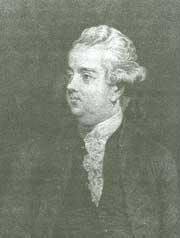

Edward Gibbon (1737-1794)

Meþhur Ýngiliz tarihçi ve yazarýdýr. Zengin bir ailenin tek çocuðu olarak yaþamýþtýr. Roma Ýmparatorluðu tarihi üzerine yaptýðý uzun süreli çalýþmalarýyla þöhret olmuþtur. “Roma Ýmparatorluðunun Gerileme ve Çöküþ Tarihi”, adýný taþýyan eserini yirmi yýl süren çalýþmanýn ve araþtýrmanýn sonunda tamamlamýþtýr. Hýristiyanlýk dini ile ilgili görüþleri ve akýlcý yaklaþýmý, Hýristiyan din adamlarýnýn büyük tepkisini çekmiþtir. Doðu-Batý toplumlarý ile ilgili deðerlendirmelerinde Doðunun daha ilerde olduðuna dikkat çekmiþtir. Risale-i Nur’da Ýslam inancý ve Kur’an-ý Kerim hakkýnda zikretmiþ olduðu ifadelerine yer verilmiþtir. Baba-oðul ve kutsal ruh akidesinin Ýslamiyet tarafýndan reddedildiðini belirtmiþ, yaratýcýnýn insan bedenine girip cisimleþmesini ifade eden “tecessüd” anlayýþýnýn kabul görmediðini yazmýþtýr.Gibbon, zengin bir ailenin çocuðu olarak 1737 yýlýnda Putney’de (Londra) doðdu. Ailenin en büyük ve hayatta kalan tek çocuðu olarak yaþadý. Küçük yaþta geçirdiði hastalýktan dolayý düzenli bir þekilde okula gidemedi. Ancak, okula gidememesine raðmen zamanýnýn önemli bir kýsmýný dedesine ait kütüphanede geçirdi. Çok sayýda kitap okudu. 1747 yýlýnda annesinin ölmesinden sonra, bakýmýný teyzesi Catrine Porten üstlendi. Saðlýðýnýn düzelmesi üzerine 1752 yýlýnda Oxford Üniversitesi’ne girerek eðitimini devam ettirdi.
Üniversiteye girdikten bir yýl sonra hayatýnda meydana gelen deðiþme babasý ile arasýnýn açýlmasýna sebep oldu. Çünkü, Protestan iken mezhep deðiþtirip Katolik olmasý babasýnýn büyük öfkesine yol açtý. Zamanýn yasalarýna göre mezhep deðiþtiren birisi hiçbir kamu görevi alma imkanýndan faydalanamazdý. Babasý, eski mezhebi olan Protestanlýða dönmesini saðlamak için kendisini Lozan’a gönderdi. Burada harçlýklarý kesildiði için çok büyük sýkýntý çekti. Akabinde tekrar eski mezhebine dönüp Protestan oldu. Bu süre zarfýnda Latin edebiyatýna ilgi duydu. Matematik ve Mantýk üzerine çalýþmalarda bulundu. Fransýzca’yý, eser yazacak bir düzeyde öðrendi. Dönüþünde askerlik vazifesini de yaptý.
Gibbon’un askerlik vazifesi boyunca yaþadýklarý, Roma ordusu hakkýndaki bilgisinin pekiþmesine ve daha iyi anlamasýna yardýmcý oldu. 1760-62 yýllarý arasýnda yüzbaþý rütbesi ile sivil savunma milisinde görev almak suretiyle askerliðini tamamladý. Eski Çað tarihine olan büyük tutkusundan ve merakýndan dolayý zamanýnýn büyük bir kýsmýný kütüphanede geçirmeye baþladý. Bol bol kitap okuyarak araþtýrmalarda bulundu. Bu amaçla Roma’ya gitti. Roma’nýn eski ve tarihi mahallerini dolaþtý. Bu gezileri sýrasýnda keþiþlerin yaptýðý akþam dualarý dikkatini çekti. Bundan sonra Roma Ýmparatorluðunun tarihini yazmaya karar verdi.
Londra’ya geri dönen Gibbon, çalýþmalarýna hýz verdi. 1774 yýlýnda Ýngiliz parlamentosuna girdiði halde çalýþmalarýna ara vermeden sürdürdü. Bir ara Ýsviçre halkýnýn özgürlük mücadelesi üzerine bir kitap yazmaya teþebbüs ettiyse de tamamlamadý ve yarýda býraktý. Roma tarihi üzerinde yoðunlaþmaya baþladý. Yirmi yýl boyunca Roma tarihi üzerindeki çalýþmalarýný devam ettirdi ve böylece uzun yýllar üzerinde çalýþtýðý Roma tarihini yazma iþini bitirdi. Eserini yazarken birçok eleþtiri ve saldýrýya uðradý. Bu eleþtirileri duymazlýktan geldi. Eserini iki bölüm halinde kaleme aldý. Birinci bölümde üç yüz yýllýk bir dönemi kapsayan ve Batý Roma’nýn sona eriþine kadar olan kýsmýný yazdý. Ýkinci bölümde ise bin yýl süren Doðu Roma’nýn (Bizans) Osmanlýlar tarafýndan, ortadan kaldýrýlýþýna kadar olan dönemi yazdý.
Gibbon, Roma Ýmparatorluðunu kendi bütünlüðü içinde ve tek bir uygarlýk olarak irdeledi. Maddi çöküþü ahlaki çöküþün sonucu ve simgesi olarak ele aldý. Hýristiyanlýða olan yaklaþýmý ise dini çevreler tarafýndan tepkiyle karþýlandý. Çünkü, dine akýlcý yaklaþýmý ve bu þekilde ele alýþý hoþ karþýlanmadý. Eseri ve yaptýðý çalýþmalarý kýsa sürede tanýnmasýna ve büyük bir þöhret elde etmesine vesile oldu. Roma Ýmparatorluðu’nun Gerileme ve Çöküþ Tarihi adýný taþýyan eseri büyük bir ilgi gördü. Edebi üstünlüðünü ve yeteneðini eserine de yansýtmasý ilgi ve alakayý arttýrdý. Bu eserin bazý ciltleri Türkçe’ye de tercüme edilip yayýmlandý.
Gibbon, Roma imparatorluðunun yýkýlýþýnýn önemli sebeplerini sýralarken, çok kültürlülükle ve bunlarýn entegrasyonuyla övünen bu imparatorluðun, baþka inançlara tolerans tanýmayan Hýristiyanlýk tarafýndan ciddi biçimde zayýflatýldýðýna dikkat çekti. Altý ciltlik eserini özetlerken de “Ben barbarlýðýn ve dinin zaferini tasvir ettim” þeklindeki dikkat çekici ifadelere yer verdi. (http://www.iktibas.info/dergi/kasim/ceviri.htm)
Britanya’nýn Roma Ýmparatorluðu tarafýndan iþgal edildiði sýrada vatandaþlarýnýn içinde bulunduðu durumu eleþtiren Gibbon, maðlubiyetin önemli sebepleri arasýnda birliðin olmamasýný gösterdi. Ýngilizleri oluþturan çeþitli boy ve kabilelerin yürekli ve özgürlüklerine düþkün insanlardan oluþmakla birlikte, kendilerini yenilmez olarak görmeleri, her türlü saldýrýya karþý koymanýn birlik ve beraberlikten geçtiðini bilmemeleri, daha çok silahlarýna önem verip savaþ dýþýnda bile birbirleriyle vuruþmak için kullanmalarý, daimi bir biçimde asýp kesmekten söz ettiklerini dile getirdi. Bunun sonucunda da Roma’ya maðlup olduklarýný ifade etti. (age. 1. C. s. 23.)
Doðu-Batý arasýnda bir deðerlendirmede bulunan Gibbon, Doðulularýn bilinmeyen çok zaman öncesinden beri lüks bir hayat yaþadýklarýný, sanat sahibi olduklarýný ve bu þekilde hayatlarýný sürdürürken Batýnýn ise, kaba saba bir fikri bile olmayan barbarlarýn ülkesi olduðunu ifadelerine ekledi. (age., s. 69)
Risale-i Nur’da Gibbon’un Ýslam ve Kur’an hakkýndaki görüþlerine yer verilmektedir. Gibbon, Ýslam’ýn; yaratýcýnýn bir insan vücuduna girip gövde sahibi olmasýný ve teslis akidesini, yani baba oðul ve kutsal ruh anlayýþýný reddettiðine iþaret etmektedir. Ganj nehri ile Atlas Okyanusu arasýndaki memleketlerin Kur’an-ý Kerim’i bir Anayasa ve esas kanunlarýn ruhu olarak kabul edip tanýdýklarýný belirtmektedir. Kur’an nazarýnda güçlü bir hükümdarla zavallý bir fakir arasýnda fark yoktur. Gibbon, Kur’an’ýn bu ve benzer esaslarýyla vücuda getirdiði kanunlarýnýn dünyada baþka bir benzeri yoktur ifadelerine yer verir.
Müslümanlýðýn esasý, Allah’a bir vücut giydirme ve üçleme anlayýþýný reddeder. Bu akideler ancak, mutaassýp Hýristiyanlarý tatmin edebilir. “Halbuki Kur'ân, bu gibi karýþýklýklardan, iphamlardan âzâdedir. Kur'ân, Allah'ýn birliðine en kuvvetli delildir. Filozofane bir dimaða mâlik olan bir muvahhid, Ýslamiyet’in nokta-i nazarýný kabul etmekte hiç tereddüt etmez. Müslümanlýk, belki bugünkü inkiþaf-ý fikrimizin seviyesinden daha yüksek bir dindir.” (Ýþaratü’l-Ý’caz, 1997, s. 265)